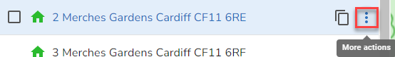
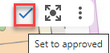
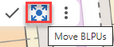

Hovering over a property or selecting it in the Explorer displays a toolbar with various actions and selecting More actions or More respectively will display further actions e.g.
If you hover over a property |
 |
If you select a single property |
Action |
Description |
Add a child to the property |
|
Add a range of children to the property |
|
Copy UPRN |
Copy the UPRN to the clipboard |
Copy address |
Copy the address to the clipboard |
Open in Street View |
Display the property in Street View. The BLPU coordinates are passed to Google and Google displays the nearest street to those coordinates |
Zoom to this |
Zoom to the property on the map |
Remove from list |
If you have created a List of properties using the Select properties tool then you may remove individual properties from the List by selecting this option. |
Make child of... |
Allows you to make this property a child of another property. See Maintaining Parent / Child Relationships for details. |
Move seed point |
This allows you to move the BLPU centroid to a new location. |
Reject |
Change the status of the BLPU & LPIs to rejected and set the end date to today for all associated records |
Historicise |
Change the status of the BLPU & LPIs to historic and set the end date to today for all associated records |
If you select more than one property from the explorer by clicking in the box, the multi-edit toolbar and actions are displayed e.g.

Note: For each of the actions you will also be able to enter an identical Note to explain your action if required. For further details on how to mulit-edit property information please see the Multi-edit Property details topic.
Action |
Description |
Set approved |
Set the BLPU & LPI Logical status to Approved along with the ability to change the State, RPC, Official address, Postal address, Post town and Postcode for the selected properties to the details you select. Also available directly from the toolbar by clicking  |
Set historic |
Set the BLPU & LPI Logical status to Historical along with the ability to change the State, RPC, Official address, Postal address, Post town and Postcode for the selected properties to the details you select. |
Edit classification |
Change the Classification of the selected properties to the one you select. |
Edit RPC |
Change the RPC of the selected properties to the one you select. |
Edit level |
Change the Level of the selected properties to the one you select. |
Exclude from export |
Change the Exclude from export of the selected properties to the one you select. |
Edit site visit required |
Change the Site visit required of the selected properties to the one you select. |
Add note |
Add an identical note to the selected properties. |
Move BLPU seed point |
Move the BLPU seed point for each of the selected properties. Also available directly from the toolbar by clicking  |
Edit address |
Update the address fields you wish to apply to the selected properties. You may edit the Street, Post town, Postcode, Official address or Postal address. |
Edit cross reference |
Add or remove Cross References from the selected properties. |